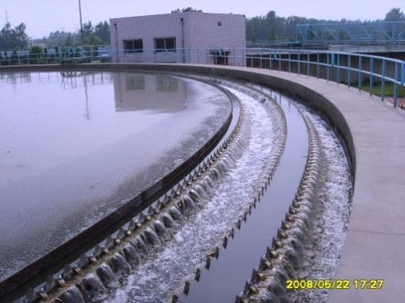

半点科技（苏州）有限公司专业代理诺维信生物增效剂。除臭菌经验证对于各种污水设备均有效。包含OdorCap 5700和BioAid 5535的处理策略可从两个方面解决异味问题。在厌氧环境中，将 BioAid 5535 添加到污水中，可关闭硫酸盐呼吸代谢途径，方法为向另一个呼吸代谢途径提供更高的能量输出。它还可以提供微生物，进而加速降解有机化合物。添加OdorCap 5700的目的专门在于，提高微生物 群落降解硫化氢、硫醇和有机酸的能力。
每年春天气温开始回升时，某纸板厂总会接到居民投诉。该纸板厂旗下有一家污水处理能力为 3,785 立方米 的污水处理厂，该污水处理厂包括一个 5,700立方米 的沉淀池和两个曝气氧化 塘。处理后的污水最终排放到当地市政污水处理厂。温暖的水温促进了细菌在厌氧环境中更快生长，同时也导致了异味化合物挥发。该纸板厂于是和诺维信取得了联系，看是否可以用生物 解决方案来去除异味，消除投诉。
诺维信在该厂的几个点进行了异味测试，断定异味是在厌氧条件下在沉淀池中产生并在到达曝气氧化塘之后立即剥裂。同时，诺维信对硫化氢、甲硫醇、二甲基硫醚、二甲基二硫醚、丁酸 以及丙酸均进行了检测。诺维信最终推荐了一种方案，该方案建议将OdorCap5700和BioAid5535一起添加到沉淀池进水中，以减少异味的产生。

在此方案开始之前15天，对最近的试验前数据进行了记录。图 1 和图2显示了在试验自第1天以来所有主要异味减少的情况，通过将这些情况与试验前数据相比较得知，在实验的前2周及之后的时间里，取得了持续性的除臭效果。衡量成功与否的方法为：记录沉淀池产生异味 的减少情况以及有关异味投诉的消除情况。